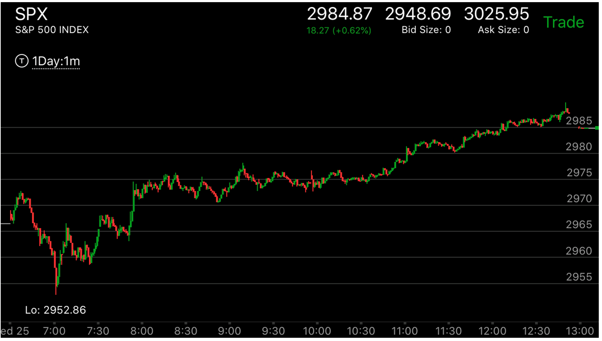

走平下跌，反弹后，再次下跌，形成加速，反转
以跌势为例,下跌，走平，再次下跌，速度和幅度都不大。这时它会立刻反弹后，再次下来。低点比前面的低点稍微低一些，这样就完成了加速走势。开始反转了。创新低不代表是走势持续。 而是走势的结束。

图示：注意看8：20的走势，它下跌走平，再次下跌。这时，它的再次下跌不是很块，这时它反弹，然后再次下跌。这次的低点比前面稍微低一些。形成了加速走势。 走势反转了。